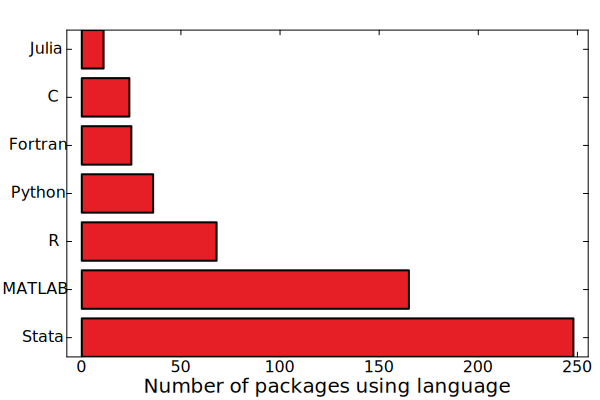
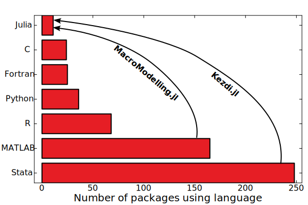
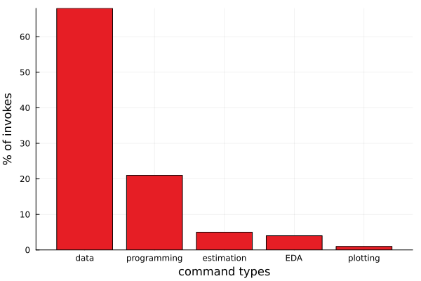
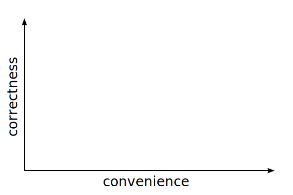
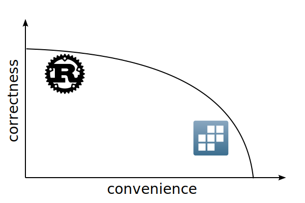
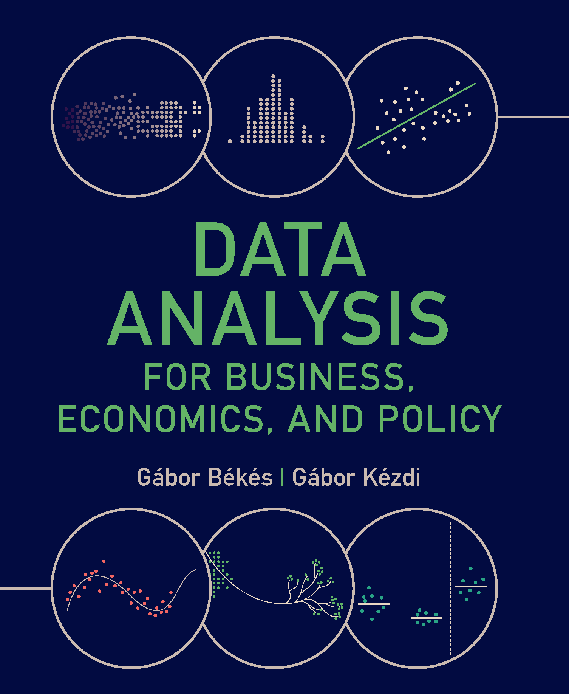

A data analysis package for economists
Miklós Koren (@korenmiklos)
Gergely Attila Kiss (@gergelyattilakiss)
JuliaCon 2024
Who am I?
Help economists adopt computing best practices to maximize their scientific impact
| Economist | ceu.edu |
|---|---|
| Data editor | restud.com |
| Developer | thnk.ng |
| Stata® | 1997 |
|---|---|
| Python | 2003 |
| Julia | 2015 |
What do economists do?
They don’t use Julia

Aspirations

What is Stata?
Stata
vs
import pandas as pd
import math
import statsmodels.api as sm
import statsmodels.formula.api as smf
df = pd.read_stata("trade.dta")
df.loc[df['distance'] < 5, 'distance'] = 5
df['log_trade'] = df['trade'].apply(math.log)
df['log_distance'] = df['distance'].
apply(math.log)
model = smf.ols('log_trade ~ log_distance',
data=df).fit(cov_type='HC3')
print(model.summary())Top 20 Stata commands
| generate | sort |
|---|---|
| use | foreach |
| replace | merge |
| drop | forvalues |
| keep | label |
| egen | global |
| local | bysort |
| save | if |
| summarize | display |
| rename | matrix |
The vast majority of commands are for data manipulation

Tradeoffs in user interface design


What do users want?
The Production Possibilities Frontier

The Production Possibilities Frontier
The Production Possibilities Frontier
The Production Possibilities Frontier

The Production Possibilities Frontier
The Production Possibilities Frontier
Features of Kezdi.jl
Command syntax is ≈exactly like in Stata
Stata
Note
- Every command is a macro. So is row-level
@if. Options are given with, option - Variable names refer to column names in the default DataFrame
- Function calls are vectorized automatically
More idiomatic version of the same code
Note
Use the former for interactive exploration in the REPL,
the
latter for scripts.
Every command can operate on a subset of rows
Note
- Useful for quick data exploration
- In
@if,missingisfalse @replace x = 4.99 @if x == 5changeseltype
Handling missing values
Handling missing values
Handling missing values
Proper data structures
User-defined functions
Roadmap


Roadmap
Statistics
- Current dependency is FixedEffectModels.jl (@matthieugomez)
- We will add support for nonlinear models (GLM.jl) with many fixed effects (GLFixedEffectModels.jl)
- Checks against Stata edge cases (multicollinearity, missing values)
- RegressionTables.jl or SummaryTables.jl for output formatting
- Wald testing
Data wrangling
- Obvious next steps:
@merge,@append,@reshape - Annotating variable names and values:
@label,@encode - Variable name handling
- Performance improvements (help needed): CSV.jl/CSVFiles.jl, StatFiles.jl
Programming convenience
- Set risk tolerance for users (Preferences.jl?)
- Allow for variable to be passed into
@with
Acknowledgements
Inspiration
Tidier.jl

Tidyverse → Julia
Douglass.jl
Johannes Boehm
Stata → Julia
Acknowledgements
| Who | What |
|---|---|
| @bkamins | DataFrames.jl |
| @matthieugomez | FixedEffectModels.jl |
| @davidanthoff | StatFiles.jl |
| @nalimilan | FreqTables.jl |
Why Kezdi?
Gábor Kézdi (1971-2021)

kezdigabor.life

gabors-data-analysis.com
Feedback and contributions welcome
@korenmiklos
@gergeleyattilakiss
thnk.ng/kezdi.jl